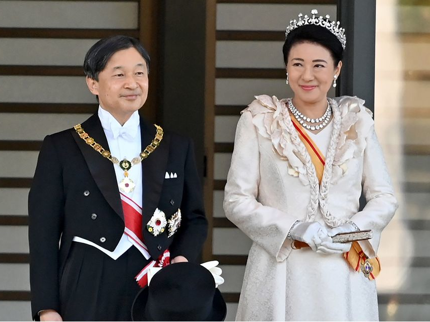

Photos et Vidéos


Cérémonie d'intronisation complète
Durée : 45:30
Discours du Nouvel An 2024
Durée : 12:15
Visite au temple Ise
Durée : 23:42
Rencontre avec les étudiants
Durée : 18:20
Cérémonie d'automne
Durée : 31:45
Documentaire : L'ère Reiwa
Durée : 58:12